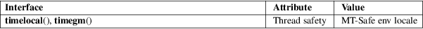

timegm, timelocal − inverses of gmtime and localtime
Standard C library (libc, −lc)
#include <time.h>
[[deprecated]]
time_t timelocal(struct tm *tm);
time_t timegm(struct tm *tm);
Feature Test Macro Requirements for glibc (see feature_test_macros(7)):
timelocal(),
timegm():
Since glibc 2.19:
_DEFAULT_SOURCE
glibc 2.19 and earlier:
_BSD_SOURCE || _SVID_SOURCE
The functions timelocal() and timegm() are the inverses of localtime(3) and gmtime(3). Both functions take a broken-down time and convert it to calendar time (seconds since the Epoch, 1970-01-01 00:00:00 +0000, UTC). The difference between the two functions is that timelocal() takes the local timezone into account when doing the conversion, while timegm() takes the input value to be Coordinated Universal Time (UTC).
On success, these functions return the calendar time (seconds since the Epoch), expressed as a value of type time_t. On error, they return the value (time_t) −1 and set errno to indicate the error.
EOVERFLOW
The result cannot be represented.
For an explanation of the terms used in this section, see attributes(7).

BSD.
GNU, BSD.
The timelocal() function is equivalent to the POSIX standard function mktime(3). There is no reason to ever use it.
gmtime(3), localtime(3), mktime(3), tzset(3)